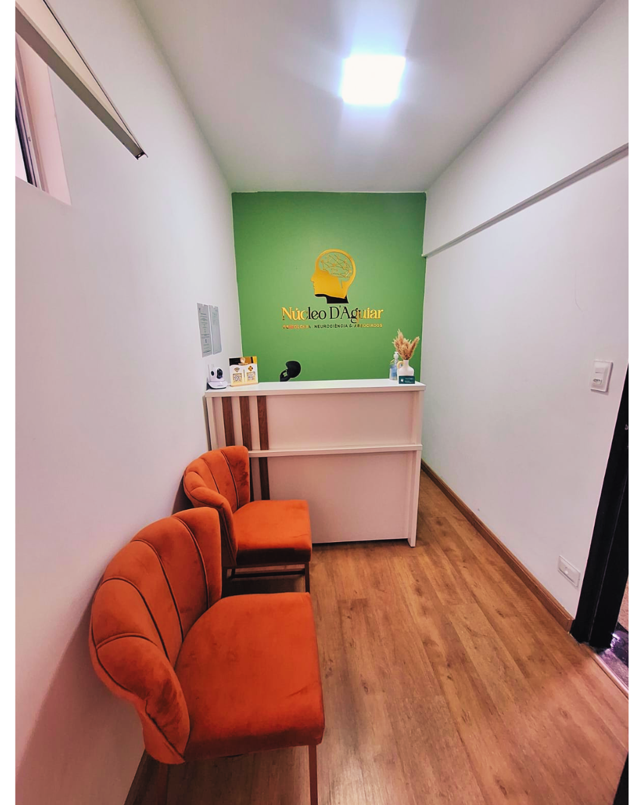
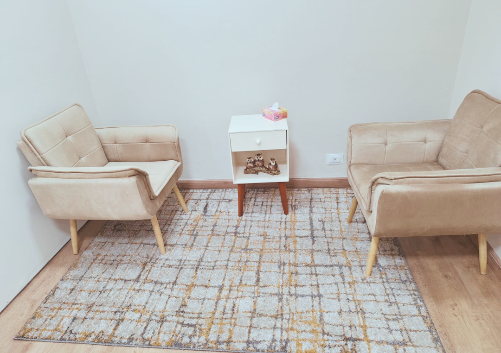
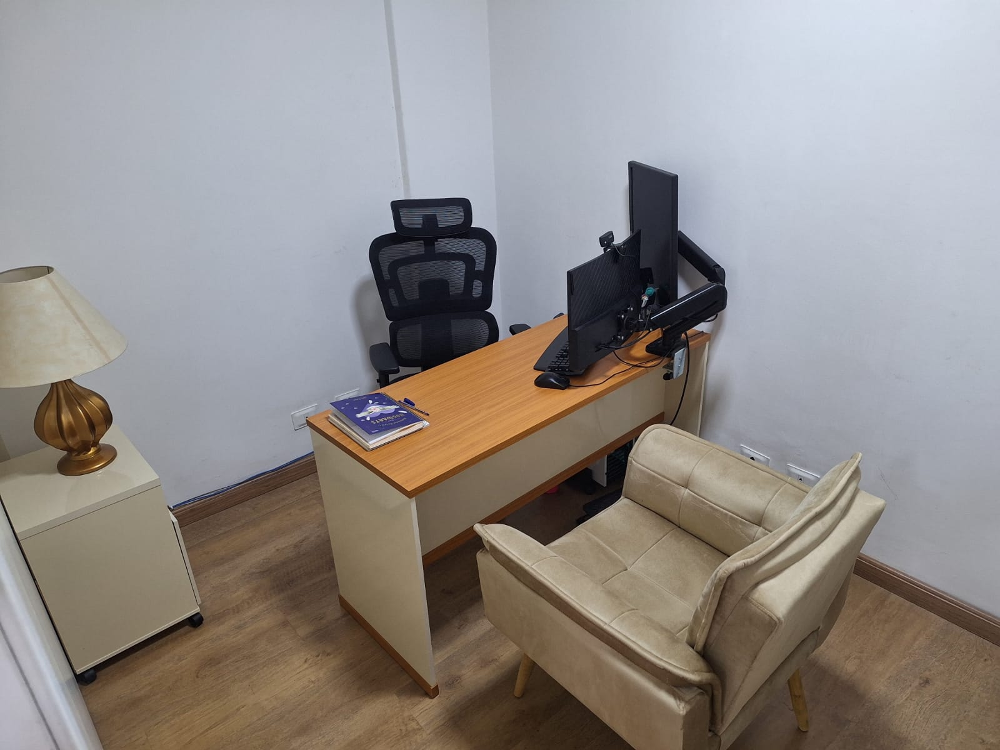
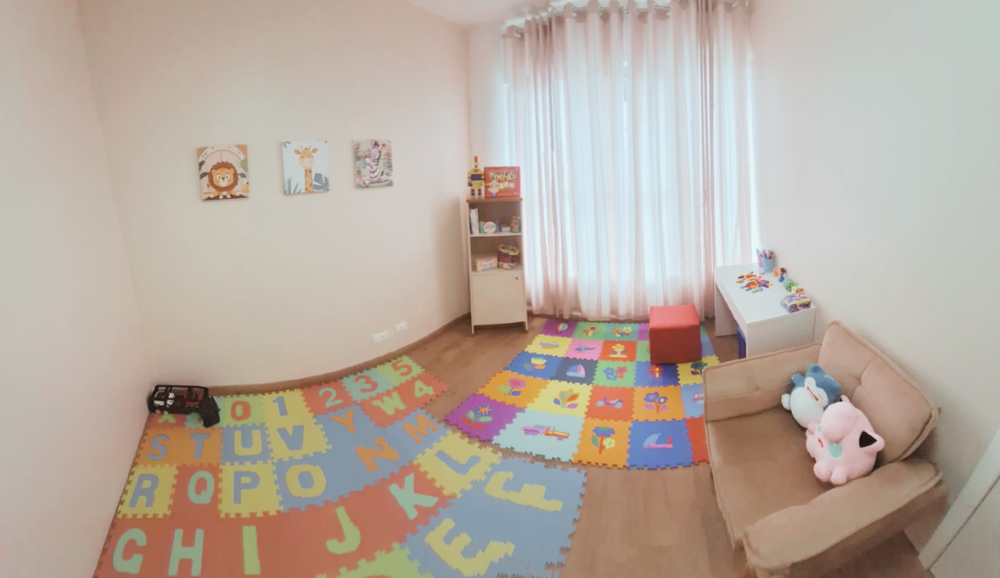

Base científica
Terapia Cognitivo-Comportamental e neuropsicologia como base para um cuidado clínico responsável.
Atendimento psicológico baseado em evidências para crianças, adolescentes e adultos, com escuta qualificada, cuidado ético e proposta clínica humanizada.




Nossa atuação clínica foi construída para oferecer acolhimento com direção, clareza técnica e respeito à singularidade de cada pessoa.
Terapia Cognitivo-Comportamental e neuropsicologia como base para um cuidado clínico responsável.
Escuta ética, acolhedora e respeitosa, com atenção à singularidade e ao contexto de cada paciente.
Atendimento para diferentes fases da vida, com modalidades adaptadas à rotina e à necessidade clínica.
O Núcleo D’Aguiar nasceu do propósito de tornar a psicologia acessível, humana e fundamentada em ciência, reunindo cuidado clínico, escuta qualificada e direção terapêutica.
Conheça nossa históriaOferecemos acompanhamento clínico e avaliações especializadas considerando história, contexto e necessidades específicas de cada paciente.
Espaço de escuta, reflexão e desenvolvimento emocional para infância, adolescência e adultos.
Saiba maisAvaliações e investigação clínica do funcionamento cognitivo, atenção, memória e funções executivas.
Saiba maisProcesso voltado ao autoconhecimento e à construção de decisões acadêmicas e profissionais.
Saiba maisO formato do atendimento é definido com base na demanda clínica, disponibilidade do profissional e melhor condição para continuidade do cuidado.
Sessões realizadas na clínica, em ambiente acolhedor, reservado e preparado para atendimento psicológico.
Atendimento por videochamada com praticidade, conforto e manutenção da qualidade clínica.
Uma equipe construída com critério, sensibilidade e responsabilidade para oferecer atendimento clínico coerente com a proposta do Núcleo D’Aguiar.
Especialista em Terapia Cognitivo-Comportamental e Neuropsicologia, com atuação em acompanhamento psicológico e avaliações psicológicas e neuropsicológicas.

Atendimento psicológico para crianças, adolescentes e adultos, com escuta acolhedora e atuação fundamentada na Terapia Cognitivo-Comportamental.
Atendimento para adolescentes e adultos, com foco em autoconhecimento, fortalecimento emocional e compreensão de padrões de pensamento.
Atendimento psicológico para adultos, com atuação em orientação parental e acompanhamento de casais em processos de adoção.
Buscamos tornar o início do atendimento mais leve, com orientação objetiva e direcionamento clínico adequado.
Você envia uma mensagem via WhatsApp para a clínica e apresenta sua demanda inicial.
Encaminhamos você ao profissional ou modalidade mais adequada para sua necessidade.
A sessão acontece de forma presencial ou online, conforme a modalidade escolhida.
Entre em contato pelo WhatsApp, conheça nosso Instagram e veja a localização da clínica.
WhatsApp: Iniciar conversa
Instagram: @nucleo.daguiar
Endereço: Av. T-1, 1536 - Setor Bueno - Galeria Donato Ferreira, Goiânia - GO